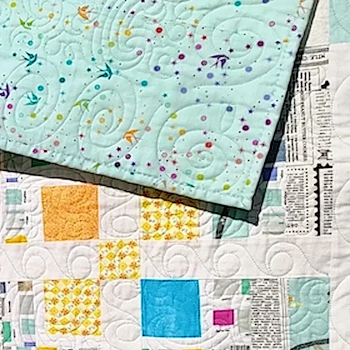

Welcome to A Quilting Creation!
Discover unique, handmade quilts and quilted gifts in my Shop, or let me stitch your own custom quilt!
Shop Quilts & GiftsDiscover unique, handmade quilts and quilted gifts in my Shop, or let me stitch your own custom quilt!
Shop Quilts & Gifts


Choose from over 1,200 creative stitch patterns or collaborate on a custom stitch pattern. I will help you design a quilt top that is truly one-of-a-kind!
Start Your Custom QuiltExpert finishing for your treasured quilt tops—fast, beautiful, and made to last.
Hello! I'm LeAnn Hill, the owner of A Quilting Creation. I am a longarm quilter with over 30 years of experience in quilting. I have a passion for creating beautiful quilts and helping others bring their quilting visions to life.
I began my quilting journey in 1993, inspired by my twin aunts who had been freehand quilting for 30 years. Their beautiful quilts captivated me, and I was eager to learn. Despite my persistent requests for lessons, their advice was always the same: "Just take a class."
My first project was a housedress pattern quilt. Although challenging for a beginner, I persevered and completed it after a year. I entered it in the Salt Lake County Fair and won 2nd place in the amateur division. This achievement encouraged me to continue quilting.
Over the years, I have created numerous quilts and table runners, many of which have been entered in the Fair, given away as gifts, or sold. I have also made specialized quilts for family, friends, neighbors, baby showers, weddings, and all kinds of occasions and holidays.
There really doesn't need to be a reason to make a quilt. For instance, my sister once asked if she could have one of the table runners I made. When I asked her why, she said, "when I look at it, it makes me happy!"
That is the why of quilting!! It does my heart good to provide warmth, beauty, and happiness to those who receive them.

My motto is, "A quilt’s beauty is measured in love, not stitches."
Happy Quilting!